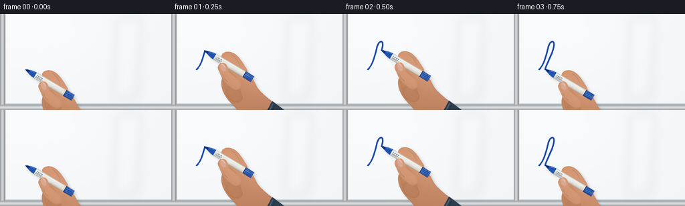
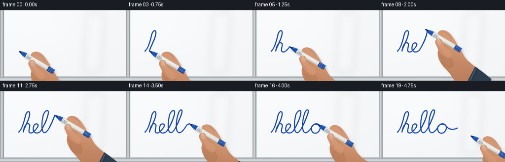

CODING AGENTS AS PIXEL WORLD MODELS
traex/GPT-6.1-Sol · phygen_032
点击播放 · 原生 RGB 像素
逐轮保存的候选
回放视频、检查图与代码变化。
每份候选均可单独播放。实际图片检查记录在下方工具轨迹中。
候选 01播放与检查图
点击播放 · 原生 RGB 像素


展开代码变化
--- 上一保存版本
+++ 本次保存版本
@@ -0,0 +1,210 @@
+from pathlib import Path
+import numpy as np
+from PIL import Image, ImageDraw, ImageFilter
+import artifact_io
+
+ROOT=Path(__file__).resolve().parent
+W,H,S=256,144,4
+WW,HH=W*S,H*S
+rng=np.random.default_rng(24)
+
+# Cubic curves are used for both the handwriting and the organic finger contours.
+def cubic(p0,p1,p2,p3,n=32):
+ t=np.linspace(0,1,n)[:,None]
+ return (1-t)**3*np.array(p0)+3*(1-t)**2*t*np.array(p1)+3*(1-t)*t*t*np.array(p2)+t**3*np.array(p3)
+def outline(start,segs):
+ out=[start]; last=start
+ for seg in segs:
+ if len(seg)==2: out.append(seg);last=seg
+ else:
+ a,b,c=seg
+ out.extend(cubic(last,a,b,c,24)[1:]);last=c
+ return np.array(out)
+
+# A continuous, natural handwritten "hello".
+start=(38,83)
+segs=[
+ ((44,78),(48,65),(51,52)),
+ ((53,40),(61,38),(60,47)),
+ ((59,59),(49,74),(47,83)),
+ ((50,66),(56,64),(59,67)),
+ ((63,69),(56,82),(60,84)),
+ ((65,88),(72,79),(76,73)),
+ ((81,66),(70,63),(68,72)),
+ ((64,87),(78,88),(83,80)),
+ ((89,71),(98,52),(98,43)),
+ ((98,34),(88,42),(87,52)),
+ ((84,66),(84,84),(90,84)),
+ ((96,86),(105,65),(111,49)),
+ ((117,34),(109,36),(106,44)),
+ ((101,58),(99,81),(106,84)),
+ ((111,86),(117,78),(122,70)),
+ ((127,63),(138,66),(137,75)),
+ ((136,85),(124,90),(120,80)),
+ ((116,69),(129,63),(136,70)),
+ ((143,79),(151,79),(159,75)),
+]
+path=outline(start,segs)
+d=np.linalg.norm(np.diff(path,axis=0),axis=1)
+arcs=np.r_[0,np.cumsum(d)]
+# Arc-length timing prevents the pen from stopping arbitrarily at curve joins.
+
+def pos_at(a):
+ return np.array([np.interp(a,arcs,path[:,0]),np.interp(a,arcs,path[:,1])])
+
+Y,X=np.mgrid[:HH,:WW]/S
+noise=rng.normal(0,.19,(HH,WW))
+light=249-2.5*(X/W)-2*(Y/H)+2.5*np.exp(-((X-83)/112)**2-((Y-33)/75)**2)
+bg=np.empty((HH,WW,3),np.uint8)
+for k,delta in enumerate([-1,0,1]):bg[:,:,k]=np.clip(light+delta+noise,0,255)
+base=Image.fromarray(bg)
+bd=ImageDraw.Draw(base)
+# Satin aluminium whiteboard surround; clean smooth writing surface.
+for x in range(7*S):
+ v=int(158+53*np.sin(np.pi*x/(7*S))**2)
+ bd.line((x,0,x,HH),fill=(v,v+3,min(255,v+6)))
+bd.line((7*S,0,7*S,HH),fill=(132,143,147),width=S)
+bd.line((8*S,0,8*S,HH),fill=(218,224,225),width=S)
+for y in range(136*S,HH):
+ v=int(162+56*np.sin((y-136*S)/(8*S)*np.pi)**2)
+ bd.line((0,y,WW,y),fill=(v,v+3,min(255,v+6)))
+bd.line((8*S,135*S,WW,135*S),fill=(159,169,174),width=S)
+bd.line((8*S,134*S,WW,134*S),fill=(230,233,234),width=S)
+# A very faint rectangular reflection in the high-gloss board finish.
+reflect=Image.new('RGBA',(WW,HH))
+rd=ImageDraw.Draw(reflect)
+rd.polygon([(175*S,5*S),(212*S,5*S),(204*S,127*S),(169*S,127*S)],fill=(255,255,255,20))
+reflect=reflect.filter(ImageFilter.GaussianBlur(7*S))
+base=Image.alpha_composite(base.convert('RGBA'),reflect)
+
+# All hand geometry is in a pen-oriented coordinate system, transformed as it moves.
+angle=.54
+u=np.array([np.cos(angle),np.sin(angle)])
+v=np.array([-np.sin(angle),np.cos(angle)])
+
+def render_hand(tip,lift=0):
+ def xf(points):
+ p=np.asarray(points,float)
+ return (tip+p[...,0,None]*u+p[...,1,None]*v)*S
+ def shape_poly(points):return [tuple(q) for q in xf(points)]
+ layer=Image.new('RGBA',(WW,HH),(0,0,0,0))
+ # Skin shading: soft lateral gradients and broad highlights, not flat fills.
+ yy,xx=np.mgrid[:HH,:WW]
+ coords=np.stack([xx/S-tip[0],yy/S-tip[1]],axis=-1)
+ lx=coords@u;ly=coords@v
+ def skin(points,bright=0):
+ mask=Image.new('L',(WW,HH));ImageDraw.Draw(mask).polygon(shape_poly(points),fill=255)
+ edge=np.asarray(mask.filter(ImageFilter.GaussianBlur(1.8*S))).astype(float)/255
+ lum=8*np.exp(-((ly+5)/22)**2)-12*np.clip((ly-5)/66,0,1)-12*(1-edge)+bright
+ rr=197+lum+5*np.sin(lx/34)
+ gg=135+lum+6*np.sin(lx/37)
+ bb=100+lum+5*np.sin(lx/42)
+ arr=np.dstack([np.clip(rr,0,255),np.clip(gg,0,255),np.clip(bb,0,255),np.asarray(mask)]) .astype(np.uint8)
+ layer.alpha_composite(Image.fromarray(arr))
+ def line(points,color,width=1):
+ ImageDraw.Draw(layer).line(shape_poly(points),fill=color,width=max(1,round(width*S)),joint='curve')
+ def fill(points,color):ImageDraw.Draw(layer).polygon(shape_poly(points),fill=color)
+ # Wrist and palm, then curled fingers behind the marker.
+ palm=outline((57,-7),[
+ ((74,-9),(85,1),(96,7)),
+ ((109,13),(128,13),(151,17)),
+ (165,65),(114,66),
+ ((104,58),(91,52),(77,48)),
+ ((60,44),(45,35),(43,20)),
+ ((40,8),(46,-1),(57,-7))])
+ skin(palm)
+ # Shirt sleeve, loosely fitted around the wrist, extending out of shot.
+ cuff=outline((125,13),[((139,14),(155,16),(166,18)),(193,68),(132,75),((127,61),(126,33),(125,13))])
+ fill(cuff,(44,61,78,255))
+ line([(128,16),(132,67)],(80,96,111,255),1.5)
+ line([(132,17),(136,68)],(25,40,55,255),.7)
+ line([(148,24),(166,65)],(51,69,86,255),1)
+ for j in range(3):
+ finger=outline((50+j*8,7+j*8),[
+ ((43+j*8,7+j*8),(39+j*8,13+j*8),(42+j*8,20+j*8)),
+ ((46+j*8,29+j*8),(63+j*7,35+j*6),(70+j*7,28+j*6)),
+ ((75+j*7,19+j*6),(67+j*7,10+j*7),(50+j*8,7+j*8))])
+ skin(finger,-3-j*2)
+ crease=outline((45+j*8,18+j*7),[((52+j*8,23+j*7),(58+j*8,23+j*7),(64+j*8,22+j*7))])
+ line(crease,(143,90,67,150),.6)
+ index=outline((28,-3),[
+ ((23,-6),(24,-13),(31,-17)),
+ ((40,-22),(52,-17),(63,-11)),
+ ((72,-8),(77,1),(73,8)),
+ ((66,11),(58,4),(51,0)),
+ ((43,-4),(34,4),(28,-3))])
+ skin(index,5)
+ line(outline((37,-15),[((44,-16),(51,-12),(56,-8))]),(152,99,75,170),.7)
+ # Cylindrical white marker barrel, reflective plastic, with blue nose and end cap.
+ def barrel(a,b,r,color):
+ # transverse cylindrical illumination
+ for q in np.linspace(-r,r,60):
+ k=max(0,1-(q/r)**2)**.5
+ gain=.72+.30*k-.07*q/r
+ col=tuple(int(np.clip(c*gain,0,255)) for c in color)+(255,)
+ line([(a,q),(b,q)],col,2*r/59+.18)
+ # ellipse end faces in the same projection
+ barrel(12,78,4.8,(231,234,229))
+ barrel(69,83,5,(26,79,169))
+ line([(69,-4.8),(69,4.8)],(16,47,115,255),.65)
+ line([(81,-4.4),(82,4.3)],(49,108,201,255),.8)
+ # A tapered blue grip collar and dark blue felt nib.
+ nose=outline((2,-1.3),[(10,-3.7),(17,-4.6),(17,4.6),(10,3.7),(2,1.3)])
+ fill(nose,(30,83,175,255))
+ line([(7,-1.6),(15,-3.5)],(94,145,220,255),.7)
+ fill([(0,0),(2,-1.4),(6,-1.2),(6,1.4),(2,1.4)],(17,44,116,255))
+ line([(18,-3),(65,-3)],(255,255,252,190),.65)
+ # Printed barrel label, visible between the fingers.
+ line([(19,1),(30,1)],(65,75,87,230),.55)
+ line([(19,2.3),(28,2.3)],(78,84,88,190),.4)
+ for z in [20,22,23.2,25,27,28.5]:line([(z,-1.7),(z,-.2)],(48,61,77,240),.55)
+ # The thumb crosses in front of the barrel to close the pinch grip.
+ thumb=outline((62,27),[
+ ((52,27),(42,22),(35,16)),
+ ((28,13),(27,7),(31,3)),
+ ((35,-1),(40,1),(44,6)),
+ ((50,12),(61,9),(69,13)),
+ ((78,19),(74,29),(62,27))])
+ skin(thumb,9)
+ line(outline((42,17),[((45,20),(48,22),(53,22))]),(151,95,70,180),.65)
+ # Small tapered thumb nail with a translucent crescent and side crease.
+ nail=outline((31,6),[
+ ((31,2),(35,2),(39,5)),
+ ((41,7),(43,10),(42,12)),
+ ((39,14),(32,11),(31,6))])
+ fill(nail,(218,168,144,255))
+ line(outline((32,5),[((33,3),(36,4),(38,6))]),(242,205,185,230),.7)
+ line(outline((32,9),[((34,12),(39,14),(42,11))]),(168,111,87,170),.45)
+ # A diffuse hand/pen shadow establishes proximity to the glossy plane.
+ alpha=layer.getchannel('A')
+ shifted=Image.new('L',(WW,HH));shifted.paste(alpha,(round((3+lift*.12)*S),round((3+lift*.18)*S)))
+ shifted=shifted.filter(ImageFilter.GaussianBlur((2.2+lift*.08)*S))
+ shadow=Image.new('RGBA',(WW,HH),(44,55,70,0));shadow.putalpha(shifted.point(lambda z:int(z*(.19 if lift==0 else .12))))
+ return layer,shadow
+
+frames=[]
+for f in range(20):
+ a=arcs[-1]*min(f/17,1)
+ point=pos_at(a)
+ scene=base.copy()
+ # Deposit only the already traced line, keeping old marks exactly stationary.
+ if f:
+ cut=path[arcs<a]
+ traced=np.vstack([cut,point])
+ draw=ImageDraw.Draw(scene)
+ pts=[tuple(p*S) for p in traced]
+ draw.line(pts,fill=(24,71,171,255),width=round(2.2*S),joint='curve')
+ for p in [traced[0],traced[-1]]:
+ x,y=p*S;r=1.05*S
+ draw.ellipse((x-r,y-r,x+r,y+r),fill=(24,71,171,255))
+ # Subtle saturated center characteristic of wet dry-erase ink.
+ draw.line(pts,fill=(29,78,181,255),width=round(.7*S),joint='curve')
+ lift=0 if f<=17 else (f-17)*9
+ tip=point+np.array([lift*1.5,lift*.85])
+ hand,shadow=render_hand(tip,lift)
+ scene=Image.alpha_composite(scene,shadow)
+ scene=Image.alpha_composite(scene,hand)
+ frame=np.asarray(scene.convert('RGB').resize((W,H),Image.Resampling.LANCZOS))
+ frames.append(frame)
+artifact_io.save(np.stack(frames).astype(np.uint8),ROOT)
+print('Saved 20 RGB frames, pixels.npz, and index.html')
可观测工具轨迹
实际执行的命令与返回图片。
命令 1exit 0
/bin/bash -lc 'ls -la; cat prompt.txt; cat GENERATION_RULES.md; cat task_spec.json'
命令 2exit 0
/bin/bash -lc 'cat artifact_io.py'
命令 3exit 0
/bin/bash -lc "python - <<'PY' import PIL, numpy print(PIL.__version__) PY"
命令 4exit 0
/bin/bash -lc "cat > generate.py <<'PY'
from pathlib import Path
import numpy as np
from PIL import Image, ImageDraw, ImageFilter
import artifact_io
ROOT=Path(__file__).resolve().parent
W,H,S=256,144,4
WW,HH=W*S,H*S
rng=np.random.default_rng(24)
# Cubic curves are used for both the handwriting and the organic finger contours.
def cubic(p0,p1,p2,p3,n=32):
t=np.linspace(0,1,n)[:,None]
return (1-t)**3*np.array(p0)+3*(1-t)**2*t*np.array(p1)+3*(1-t)*t*t*np.array(p2)+t**3*np.array(p3)
def outline(start,segs):
out=[start]; last=start
for seg in segs:
if len(seg)==2: out.append(seg);last=seg
else:
a,b,c=seg
out.extend(cubic(last,a,b,c,24)[1:]);last=c
return np.array(out)
# A continuous, natural handwritten \"hello\".
start=(38,83)
segs=[
((44,78),(48,65),(51,52)),
((53,40),(61,38),(60,47)),
((59,59),(49,74),(47,83)),
((50,66),(56,64),(59,67)),
((63,69),(56,82),(60,84)),
((65,88),(72,79),(76,73)),
((81,66),(70,63),(68,72)),
((64,87),(78,88),(83,80)),
((89,71),(98,52),(98,43)),
((98,34),(88,42),(87,52)),
((84,66),(84,84),(90,84)),
((96,86),(105,65),(111,49)),
((117,34),(109,36),(106,44)),
((101,58),(99,81),(106,84)),
((111,86),(117,78),(122,70)),
((127,63),(138,66),(137,75)),
((136,85),(124,90),(120,80)),
((116,69),(129,63),(136,70)),
((143,79),(151,79),(159,75)),
]
path=outline(start,segs)
d=np.linalg.norm(np.diff(path,axis=0),axis=1)
arcs=np.r_[0,np.cumsum(d)]
# Arc-length timing prevents the pen from stopping arbitrarily at curve joins.
def pos_at(a):
return np.array([np.interp(a,arcs,path[:,0]),np.interp(a,arcs,path[:,1])])
Y,X=np.mgrid[:HH,:WW]/S
noise=rng.normal(0,.19,(HH,WW))
light=249-2.5*(X/W)-2*(Y/H)+2.5*np.exp(-((X-83)/112)**2-((Y-33)/75)**2)
bg=np.empty((HH,WW,3),np.uint8)
for k,delta in enumerate([-1,0,1]):bg[:,:,k]=np.clip(light+delta+noise,0,255)
base=Image.fromarray(bg)
bd=ImageDraw.Draw(base)
# Satin aluminium whiteboard surround; clean smooth writing surface.
for x in range(7*S):
v=int(158+53*np.sin(np.pi*x/(7*S))**2)
bd.line((x,0,x,HH),fill=(v,v+3,min(255,v+6)))
bd.line((7*S,0,7*S,HH),fill=(132,143,147),width=S)
bd.line((8*S,0,8*S,HH),fill=(218,224,225),width=S)
for y in range(136*S,HH):
v=int(162+56*np.sin((y-136*S)/(8*S)*np.pi)**2)
bd.line((0,y,WW,y),fill=(v,v+3,min(255,v+6)))
bd.line((8*S,135*S,WW,135*S),fill=(159,169,174),width=S)
bd.line((8*S,134*S,WW,134*S),fill=(230,233,234),width=S)
# A very faint rectangular reflection in the high-gloss board finish.
reflect=Image.new('RGBA',(WW,HH))
rd=ImageDraw.Draw(reflect)
rd.polygon([(175*S,5*S),(212*S,5*S),(204*S,127*S),(169*S,127*S)],fill=(255,255,255,20))
reflect=reflect.filter(ImageFilter.GaussianBlur(7*S))
base=Image.alpha_composite(base.convert('RGBA'),reflect)
# All hand geometry is in a pen-oriented coordinate system, transformed as it moves.
angle=.54
u=np.array([np.cos(angle),np.sin(angle)])
v=np.array([-np.sin(angle),np.cos(angle)])
def render_hand(tip,lift=0):
def xf(points):
p=np.asarray(points,float)
return (tip+p[...,0,None]*u+p[...,1,None]*v)*S
def shape_poly(points):return [tuple(q) for q in xf(points)]
layer=Image.new('RGBA',(WW,HH),(0,0,0,0))
# Skin shading: soft lateral gradients and broad highlights, not flat fills.
yy,xx=np.mgrid[:HH,:WW]
coords=np.stack([xx/S-tip[0],yy/S-tip[1]],axis=-1)
lx=coords@u;ly=coords@v
def skin(points,bright=0):
mask=Image.new('L',(WW,HH));ImageDraw.Draw(mask).polygon(shape_poly(points),fill=255)
edge=np.asarray(mask.filter(ImageFilter.GaussianBlur(1.8*S))).astype(float)/255
lum=8*np.exp(-((ly+5)/22)**2)-12*np.clip((ly-5)/66,0,1)-12*(1-edge)+bright
rr=197+lum+5*np.sin(lx/34)
gg=135+lum+6*np.sin(lx/37)
bb=100+lum+5*np.sin(lx/42)
arr=np.dstack([np.clip(rr,0,255),np.clip(gg,0,255),np.clip(bb,0,255),np.asarray(mask)]) .astype(np.uint8)
layer.alpha_composite(Image.fromarray(arr))
def line(points,color,width=1):
ImageDraw.Draw(layer).line(shape_poly(points),fill=color,width=max(1,round(width*S)),joint='curve')
def fill(points,color):ImageDraw.Draw(layer).polygon(shape_poly(points),fill=color)
# Wrist and palm, then curled fingers behind the marker.
palm=outline((57,-7),[
((74,-9),(85,1),(96,7)),
((109,13),(128,13),(151,17)),
(165,65),(114,66),
((104,58),(91,52),(77,48)),
((60,44),(45,35),(43,20)),
((40,8),(46,-1),(57,-7))])
skin(palm)
# Shirt sleeve, loosely fitted around the wrist, extending out of shot.
cuff=outline((125,13),[((139,14),(155,16),(166,18)),(193,68),(132,75),((127,61),(126,33),(125,13))])
fill(cuff,(44,61,78,255))
line([(128,16),(132,67)],(80,96,111,255),1.5)
line([(132,17),(136,68)],(25,40,55,255),.7)
line([(148,24),(166,65)],(51,69,86,255),1)
for j in range(3):
finger=outline((50+j*8,7+j*8),[
((43+j*8,7+j*8),(39+j*8,13+j*8),(42+j*8,20+j*8)),
((46+j*8,29+j*8),(63+j*7,35+j*6),(70+j*7,28+j*6)),
((75+j*7,19+j*6),(67+j*7,10+j*7),(50+j*8,7+j*8))])
skin(finger,-3-j*2)
crease=outline((45+j*8,18+j*7),[((52+j*8,23+j*7),(58+j*8,23+j*7),(64+j*8,22+j*7))])
line(crease,(143,90,67,150),.6)
index=outline((28,-3),[
((23,-6),(24,-13),(31,-17)),
((40,-22),(52,-17),(63,-11)),
((72,-8),(77,1),(73,8)),
((66,11),(58,4),(51,0)),
((43,-4),(34,4),(28,-3))])
skin(index,5)
line(outline((37,-15),[((44,-16),(51,-12),(56,-8))]),(152,99,75,170),.7)
# Cylindrical white marker barrel, reflective plastic, with blue nose and end cap.
def barrel(a,b,r,color):
# transverse cylindrical illumination
for q in np.linspace(-r,r,60):
k=max(0,1-(q/r)**2)**.5
gain=.72+.30*k-.07*q/r
col=tuple(int(np.clip(c*gain,0,255)) for c in color)+(255,)
line([(a,q),(b,q)],col,2*r/59+.18)
# ellipse end faces in the same projection
barrel(12,78,4.8,(231,234,229))
barrel(69,83,5,(26,79,169))
line([(69,-4.8),(69,4.8)],(16,47,115,255),.65)
line([(81,-4.4),(82,4.3)],(49,108,201,255),.8)
# A tapered blue grip collar and dark blue felt nib.
nose=outline((2,-1.3),[(10,-3.7),(17,-4.6),(17,4.6),(10,3.7),(2,1.3)])
fill(nose,(30,83,175,255))
line([(7,-1.6),(15,-3.5)],(94,145,220,255),.7)
fill([(0,0),(2,-1.4),(6,-1.2),(6,1.4),(2,1.4)],(17,44,116,255))
line([(18,-3),(65,-3)],(255,255,252,190),.65)
# Printed barrel label, visible between the fingers.
line([(19,1),(30,1)],(65,75,87,230),.55)
line([(19,2.3),(28,2.3)],(78,84,88,190),.4)
for z in [20,22,23.2,25,27,28.5]:line([(z,-1.7),(z,-.2)],(48,61,77,240),.55)
# The thumb crosses in front of the barrel to close the pinch grip.
thumb=outline((62,27),[
((52,27),(42,22),(35,16)),
((28,13),(27,7),(31,3)),
((35,-1),(40,1),(44,6)),
((50,12),(61,9),(69,13)),
((78,19),(74,29),(62,27))])
skin(thumb,9)
line(outline((42,17),[((45,20),(48,22),(53,22))]),(151,95,70,180),.65)
# Small tapered thumb nail with a translucent crescent and side crease.
nail=outline((31,6),[
((31,2),(35,2),(39,5)),
((41,7),(43,10),(42,12)),
((39,14),(32,11),(31,6))])
fill(nail,(218,168,144,255))
line(outline((32,5),[((33,3),(36,4),(38,6))]),(242,205,185,230),.7)
line(outline((32,9),[((34,12),(39,14),(42,11))]),(168,111,87,170),.45)
# A diffuse hand/pen shadow establishes proximity to the glossy plane.
alpha=layer.getchannel('A')
shifted=Image.new('L',(WW,HH));shifted.paste(alpha,(round((3+lift*.12)*S),round((3+lift*.18)*S)))
shifted=shifted.filter(ImageFilter.GaussianBlur((2.2+lift*.08)*S))
shadow=Image.new('RGBA',(WW,HH),(44,55,70,0));shadow.putalpha(shifted.point(lambda z:int(z*(.19 if lift==0 else .12))))
return layer,shadow
frames=[]
for f in range(20):
a=arcs[-1]*min(f/17,1)
point=pos_at(a)
scene=base.copy()
# Deposit only the already traced line, keeping old marks exactly stationary.
if f:
cut=path[arcs<a]
traced=np.vstack([cut,point])
draw=ImageDraw.Draw(scene)
pts=[tuple(p*S) for p in traced]
draw.line(pts,fill=(24,71,171,255),width=round(2.2*S),joint='curve')
for p in [traced[0],traced[-1]]:
x,y=p*S;r=1.05*S
draw.ellipse((x-r,y-r,x+r,y+r),fill=(24,71,171,255))
# Subtle saturated center characteristic of wet dry-erase ink.
draw.line(pts,fill=(29,78,181,255),width=round(.7*S),joint='curve')
lift=0 if f<=17 else (f-17)*9
tip=point+np.array([lift*1.5,lift*.85])
hand,shadow=render_hand(tip,lift)
scene=Image.alpha_composite(scene,shadow)
scene=Image.alpha_composite(scene,hand)
frame=np.asarray(scene.convert('RGB').resize((W,H),Image.Resampling.LANCZOS))
frames.append(frame)
artifact_io.save(np.stack(frames).astype(np.uint8),ROOT)
print('Saved 20 RGB frames, pixels.npz, and index.html')
PY
python generate.py"命令 5exit 0
/bin/bash -lc "command -v ffmpeg; ls -lh pixels.npz index.html; python - <<'PY'
import numpy as np
x=np.load('pixels.npz')['pixels']
print('Packed video shape:',x.shape)
PY"视觉工具实际返回图片 1

保存候选 1 份；完成命令 5 次；可验证图片返回 1 张。原始 API 响应与完整日志保留在本地。